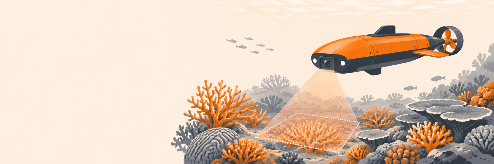
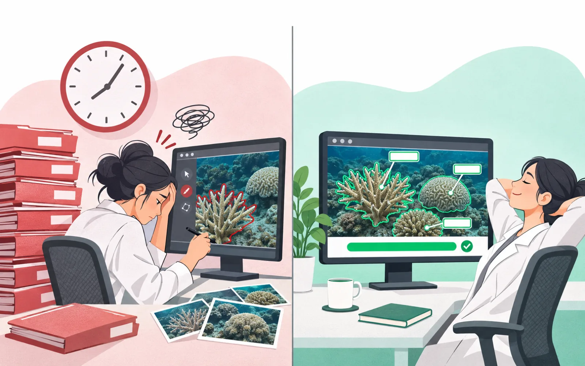
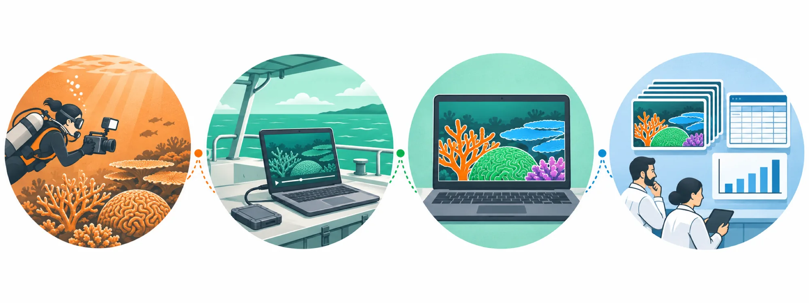

Introduction
Why the project exists, the problems it removes and the full feature set.
1.1Why this project is being made
Coral reef monitoring runs on photographs and video transects shot by divers, ROVs and AUVs. Turning that footage into numbers (how much of the seafloor is live coral, which genera are present, how many colonies are bleached) has traditionally meant a researcher tracing colony outlines by hand, image after image. A single survey can produce thousands of frames, so the analysis lags months behind the dive.
Reef Vision Studio does that work automatically, on the researcher's own computer. It outlines every colony, names its genus and growth form, flags bleaching, lets a human correct anything in a fast editor, and exports the result as standard machine-learning datasets and spreadsheets.

1.2The journey it supports

Footage comes off the dive, is processed on a laptop (even on the boat, with no internet once the models are downloaded), and leaves as COCO datasets for model training plus CSV reports for reef scientists.
1.3Challenges it solves
Manual annotation
Automatic instance segmentation replaces hand tracing; people only review and correct.
Identifying corals
Zero-shot genus and growth-form labels across 16 genera, so non-specialists get a usable first pass.
Bleaching at scale
Every colony gets a healthy / bleached call with a confidence score, ready for reef-health statistics.
Survey video, not just photos
Colonies are tracked through a transect with persistent IDs, so each is counted once instead of once per frame.
Any laptop
One ONNX runtime uses an NVIDIA GPU, Apple Silicon or plain CPU. No cloud account is needed.
Usable outputs
COCO JSON, dataset zips, CSV census tables and annotated MP4s plug straight into training pipelines and spreadsheets.
1.4Every feature, in detail
- Dense instance segmentation with CoralSCOP: automatic grid-prompted masks, a coral/non-coral head and box NMS to drop duplicates.
- Tunable inference: grid density, IoU threshold, stability threshold and minimum mask area.
- Taxonomy enrichment: genus, common name and growth form per colony from BioCLIP, with top-k confidence.
- Bleaching assessment: healthy or bleached per colony from a NOAA-trained YOLO11n classifier.
- Survey metrics: corals detected, reef coverage %, average IoU confidence, average stability.
- Four layouts: side by side, overlay, original, masks on black.
- Four colour modes: colony instances, health condition, taxonomy, taxonomy + health.
- Mask editor on a Konva canvas: drag vertices, add or delete points, change genus, growth form and condition.
- SAM smart click: place foreground and background points, run the decoder, accept the new mask.
- Polygon tool, undo / redo history, 20-second auto-save and a full shortcuts sheet.
- Bulk processing of a folder, multi-select or .zip, in a background thread with pause, resume and cancel.
- Sample library of bundled reef images for demos.
- Exports: COCO JSON, overlay PNG, segments CSV, raw model telemetry, and a full dataset folder or .zip.
- 25 FPS standardisation of any .mp4, .mov or .avi.
- Optical-flow tracking with persistent colony IDs and async CoralSCOP keyframes.
- Live results while the job runs, plus playback, scrubbing and a telemetry log.
- Exports: annotated MP4, transect telemetry CSV, COCO-video tracking JSON.
- Desktop app (Tauri) that starts and health-checks its own local engine.
- Offline after the one-time model download.
- Hardware tiers: CUDA, CoreML, multi-threaded or single-threaded CPU.
- Remote engine mode: point the UI at a Colab GPU runtime through a tunnel.